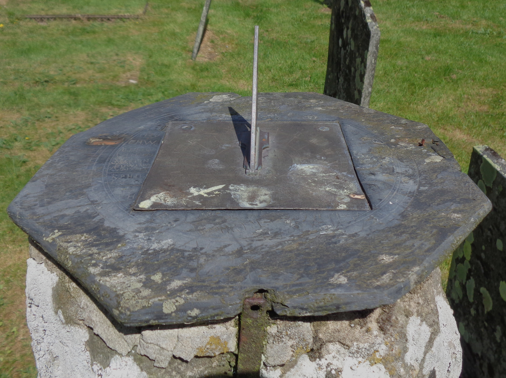
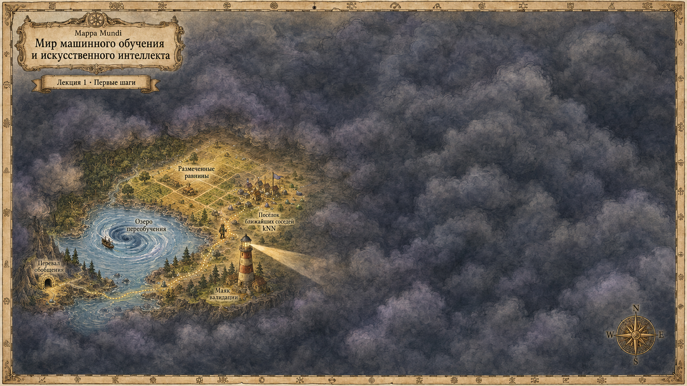

Научиться
- Ставить задачу
- Оценивать качество решения
- Выбирать подходящую модель
- Объяснять менее подкованным коллегам, что за AI такой

Машинное обучение · Лекция 1
Основатель girafe-ai, автор курсов по машинному обучению в МФТИ, МГУ и ШАД.
AI · LLM · Reinforcement Learning · Human Activity Recognition
 Мой канал@rads_ai
Мой канал@rads_aiОснователь girafe-ai, автор курсов и магистерской программы по машинному обучению в МФТИ.
Четверг, 10 сентября
20:00
110 КПМ
| Задача | Что наблюдаем | Что хотим получить |
|---|---|---|
| Распознавание речи | Запись голоса | Произнесённый текст |
| Прогноз времени в пути | Маршрут и дорожную обстановку | Время до прибытия |
| Обработка фотографий | Изображение с камеры | Изображение с меньшим шумом |
Во всех случаях используем закономерности, найденные в данных.

Гравюра, конец XVI века: Тихо Браге и стенной квадрант
Солнце находится в одном из фокусов эллипса.
На схеме A и B – места измерений; θ – центральный угол, d – дуга между ними, C – длина окружности Земли.
Сферическая Земля; почти один меридиан. Традиционная реконструкция, не в масштабе.

Современные солнечные часы, Уэльс. Иллюстрация принципа, не прибор Эратосфена.
Что известно об объектах?
Какая зависимость предполагается?
Что можно определить из данных?
Как проверить полученный результат?
Раньше закономерность искал человек. В ML часть этой работы выполняет алгоритм.
Например, предсказывать оценку по ML как среднее оценок по статистике и Python.
Задать семейство правил и критерий качества. Использовать известные ответы, чтобы выбрать правило.
Обучение с учителем (supervised learning): у обучающих примеров есть известные ответы.
Известны оценки по статистике и Python. Чего ждать на экзамене по ML?
| Объект | Статистика | Python | Итоговая оценка | Сдал? |
|---|---|---|---|---|
| Иван | 5 | 4 | 5 | да |
| Анна | 4 | 5 | 4 | да |
| Эмилия | 5 | 5 | 5 | да |
| Михаил | 3 | 4 | 5 | да |
| Алексей | 3 | 3 | 2 | нет |
Учебные, вымышленные данные
Объект – один элемент выборки. Здесь это строка с данными студента.
| Объект | Статистика | Python | Итоговая оценка | Сдал? |
|---|---|---|---|---|
| Иван | 5 | 4 | 5 | да |
| Анна | 4 | 5 | 4 | да |
| Эмилия | 5 | 5 | 5 | да |
| Михаил | 3 | 4 | 5 | да |
| Алексей | 3 | 3 | 2 | нет |
Объектом также может быть фотография, аудиозапись или молекула.
Признаки описывают объект: здесь это две предыдущие оценки.
| Объект | Статистика | Python | Итоговая оценка | Сдал? |
|---|---|---|---|---|
| Иван | 5 | 4 | 5 | да |
| Анна | 4 | 5 | 4 | да |
| Эмилия | 5 | 5 | 5 | да |
| Михаил | 3 | 4 | 5 | да |
| Алексей | 3 | 3 | 2 | нет |
Вектор признаков x: x1 – оценка по статистике, x2 – по Python. В общем случае n признаков; xj – признак с номером j.
R – множество действительных чисел; Rn – векторы из n чисел. Знак ∈ означает «принадлежит».
Сегодня алгоритм получает числовой вектор. Позже будем учиться строить само представление.
Целевая переменная y – ответ, который требуется предсказывать.
| Объект | Статистика | Python | Итоговая оценка | Сдал? |
|---|---|---|---|---|
| Иван | 5 | 4 | 5 | да |
| Анна | 4 | 5 | 4 | да |
| Эмилия | 5 | 5 | 5 | да |
| Михаил | 3 | 4 | 5 | да |
| Алексей | 3 | 3 | 2 | нет |
D – обучающая выборка из m пар. Номер пары – i; x(i) – её признаки, y(i) – известный ответ.
i.i.d. (independent and identically distributed): наблюдения независимы и получены из одного распределения.
Независимы наблюдения, а не признаки внутри наблюдения.
Есть и другие задачи, например ранжирование (ranking).
До экзамена известны оценки по статистике и Python. Требуется предсказать, будет ли сдан курс ML.
Итоговая оценка по ML станет известна позже; использовать её как признак нельзя.
X – пространство описаний объектов; Y – пространство допустимых ответов. Модель f – функция между этими пространствами.
y^ – предсказание для объекта x; y – известный ответ. Запись: y^=f(x).
Предполагаем, что обе предыдущие оценки одинаково важны.
Предполагаем, что предыдущие оценки можно не учитывать.
Что здесь задано заранее, а что можно подобрать по данным? Затем – как сравнить ошибки.
Значения, которые определяются при обучении модели.
Один числовой признак x; коэффициенты: a – вес, b – смещение.
Задают вид модели или способ обучения.
Например, тип правила в общей процедуре:
В предыдущем примере константа 4 задана заранее. Если оценивать её по данным, она будет параметром.
Осторожно: одинаковое название не означает одинаковое понятие
d – расстояние; x,z,u – любые три объекта.
Ноль у совпадающих объектов; иначе – положительно.
Показатель качества предсказаний на выборке.
Например, средняя квадратичная ошибка (MSE, mean squared error).
Показатель качества не обязан удовлетворять аксиомам расстояния.
Функция потерь ℓ(y,y^) измеряет ошибку предсказания. Здесь – квадрат разности.
Для MSE ошибка каждого объекта возводится в квадрат.
∑i=1m означает сумму по всем m объектам; i – номер объекта.
| Объект | y | y^A | (y−y^A)2 | y^B | (y−y^B)2 |
|---|---|---|---|---|---|
| Иван | 5 | 4,5 | 0,25 | 4 | 1 |
| Анна | 4 | 4,5 | 0,25 | 4 | 0 |
| Эмилия | 5 | 5 | 0 | 4 | 1 |
| Михаил | 5 | 3,5 | 2,25 | 4 | 1 |
| Алексей | 2 | 3 | 1 | 4 | 4 |
Меньше средняя квадратичная ошибка – лучше предсказания на этой выборке.
Какие объекты похожи?
Евклидово расстояние
Какова ошибка одного предсказания?
Квадрат разности
Насколько хорошо работает решение на выборке?
Средняя квадратичная ошибка (MSE) или средняя абсолютная ошибка (MAE, mean absolute error).
Расстояние сравнивает объекты, потери – ответы, качество – результат на выборке.
Какой класс предсказать для нового объекта?
Отдельный набор: x1,x2 – условные числовые признаки, не оценки студентов.
k – число соседей, участвующих в предсказании.
Код голоса: (1,0) – за класс A, (0,1) – за класс B. После усреднения – доли голосов в том же порядке.
Предсказать класс с наибольшей долей голосов. Здесь – B.
y(r) – ответ r-го ближайшего соседа; r – его номер среди k выбранных соседей.
Ответы трёх соседей: 3, 4, 5. Предсказание: 4.
Обведены 3 выбранных соседа. Вертикальная линия – признак нового объекта; горизонтальная – предсказание.
x,z – два вектора из n признаков. d2 – евклидово расстояние; d1 – манхэттенское.
∑j=1n – сумма по признакам; ∣xj−zj∣ – модуль разности.
x – новый объект; z и u – два обучающих объекта. Используется евклидово расстояние.
| Объект | До нормировки | x2/1000 |
|---|---|---|
| x | (3;250) | (3;0,25) |
| z | (2;1000) | (2;1,00) |
| u | (6;200) | (6;0,20) |
| d(x,z) | ≈750 | 1,25 |
| d(x,u) | ≈50 | ≈3,00 |
| Ближайший объект | u | z |
Здесь второй признак каждого объекта делится на 1000. Стандартизация – другой способ нормировки; её формула будет дальше.
θ – угол между ненулевыми векторами x и z; scos – косинусная близость.
Для нулевого вектора формула не определена.
Что изменится, если учитывать больше соседей?
Граница изменилась. Стало ли предсказание лучше – ещё нужно проверить.
Теперь ответ зависит от самого дальнего объекта, а не только от ближайших.
kNN сохраняет обучающую выборку и использует её для предсказаний.
При k=1 ближайший сосед
обучающего объекта – он сам.
Сохранённые ответы воспроизводятся. Качество на новых объектах всё ещё неизвестно.
Сохранить обучающие объекты и оценить параметры преобразований.
Выбрать k, расстояние и другие настройки.
Оценить итоговое, зафиксированное решение.
Размеры частей на схеме условные. Универсального соотношения нет.
Доля верных ответов (accuracy) – число совпадений предсказания и ответа, делённое на число объектов. m – число объектов этой выборки.
В этом наборе 95% совпадает с результатом постоянного правила y^=A.
Базовое решение (baseline) – простое правило для сравнения.
| k | Train: верных | Validation: верных | Validation accuracy |
|---|---|---|---|
| 1 | 11/11 | 4/5 | 80% |
| 3 | 10/11 | 5/5 | 100% |
| 5 | 10/11 | 5/5 | 100% |
Правило для равных результатов: выбрать меньшее k. Здесь k=3.
Синтетический пример: 11 train и 5 validation. Test не открыт. Пять объектов – очень неточная оценка.
Проверка становится оптимистичнее, чем реальное применение.
μj – среднее признака j; σj – его стандартное отклонение. x~j – значение после преобразования.
train / validation / test
μj и σj только на train
Те же числа для всех частей
Выбор: validation
Итог: test
Если σj=0, деление не определено: постоянный признак обрабатывается отдельно.
Валидационные данные должны соответствовать условиям будущего применения.
Размеченные объекты и признаки
Соседи → голосование или среднее
Сохранить train; выбрать k на validation
Зафиксировать решение; оценить на test
Для нового объекта: те же признаки → то же преобразование → предсказание.
Постановка задачи
kNN
Валидация
Линейные модели
Эмбеддинги
Снижение размерности
Деревья и ансамбли
Нейронные сети
Изображения и язык
CLIP и attention
Self-supervised learning
Transformer
План будет дорабатываться.
В правой схеме A,B,C – токены; uA,uB,uC – их выходные векторы после самовнимания.
Для каждого метода курса будем искать свойство данных, которое он использует.
На семинаре проверим эти рассуждения в экспериментах.
| Запись | Смысл |
|---|---|
| xj,y,y^,k | Признак; известный ответ; предсказание; число соседей |
| x,x(i),xj(i) | Вектор признаков; вектор объекта i; его признак j |
| X,Y,f | Пространства объектов и ответов; функция предсказания |
| D,m,n | Обучающая выборка; число объектов; число признаков |
| X∈Rm×n | Матрица признаков X: строки – объекты, столбцы – признаки |
Типографика и индексация – Deep Learning Book. D обозначает пары «признаки–ответ».
Тихо Браге, наблюдения Марса, эллипсы и законы Кеплера
Геометрическая схема измерения окружности Земли
Историческая реконструкция и границы её точности
Материалы курса: программа 2026 и архив слайдов Радослава Нейчева / girafe-ai. Числовые данные и демонстрации – учебные.
https://t.me/rads_ai
{kind=link}
{kind=link}